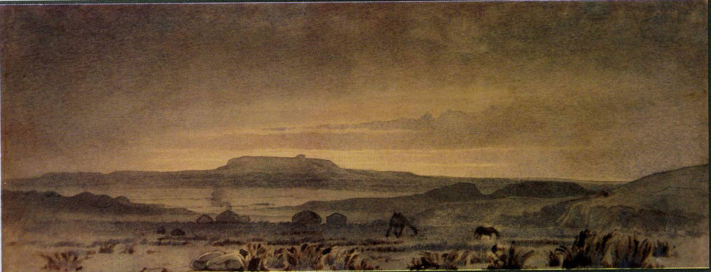
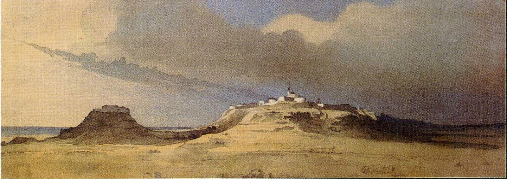
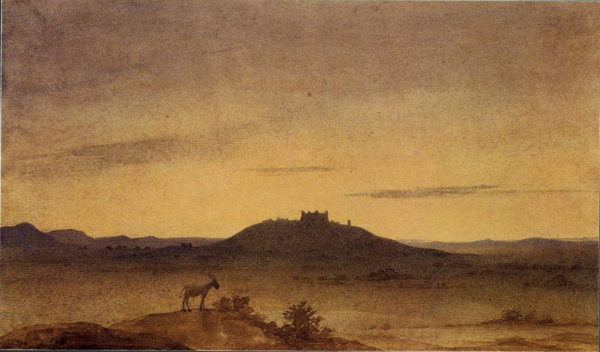

Св. Себастіан, 1856Діоген, 1856Киргизеня, 1856-1857Киргизка, 1856Мілон Кротонський, 1856Самарянка, 1856Молитва за померлими, 1856-1857Нарцис та німфа Ехо, 1856Щасливий ловець, 1856-1857Тріо, 1851Благословення дітей, 1856Хлопчик розпалює грубку. 1848-1849Умираючий гладіатор, 1856Дерева Мангишлаку, 1851-1852Гора Кулаат, 1851 -1857Далісмен-Мула-аульє, 1851Біля вогню, 1848-1849Чиркалатау, 1851-1857Робінзон Крузо, 1856Ханга-Баба, 1851-1857Телемак на острові Каліпсо, 1856Місячна ніч серед гір, 1851-1857Серед товаришів, 1851Циган, 1851Мис Тюккарагай на півострові Мангишлак, 1856-1857Новопетровське укріплення, 1853-1857Новопетровське укріплення з Хівінського шляху, 1856-1857Туркменські аби в Каратау, 1851-1857Сад біля Новопокровського укріплення, 1854Дустанова могила, 1848-1850Форт Карабутак. 1848-1850Гористий берег острова Ніколая. 1848-1849Крутий берег Аральського моря, 1848-1849Мис Байгубек, 1848Акмиштау, 1851Вид на Каратау з долини Апазир, 1851Укріплення Іргизкала. 1848-1850Місячна ніч на Косаралі, 1848-1849Низький берег острова Ніколая, 1848-1849Розп'яття, 1850Острів Кугарал, 1848-1849Шхуни 'Константин' та 'Михаїл', 1848Джангисагач, 1848